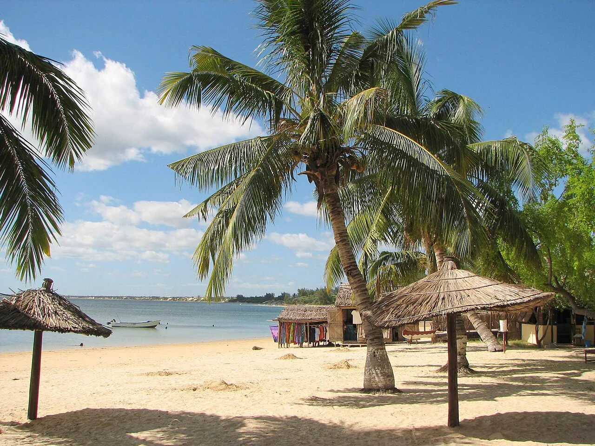

Ifaty
Tuléar, Madagascar · snorkeling, plongée

Lagon protégé par l’une des plus grandes barrières de corail du monde. Les pirogues vezo mènent aux jardins de corail.
- Lieu
- Tuléar, Madagascar
- Niveau
- Débutant
- Activités
- snorkeling, plongée
- Type d'eau
- Mer / océan
- Coordonnées
- -23.15, 43.61 (position approximative du secteur)
Dangers à connaître
- Récif fragile.
- Courant dans les passes.
Le conseil d'Ocean Buddy
Plonge avec un centre local et évite de toucher le récif, déjà fragilisé.
Ouvrir dans Ocean Buddy Télécharger sur l'App Store
Source : Fiche Ocean Buddy · septembre 2026 · à vérifier localement.